NEXT Interfaces
Sistema de interfaces dentro do jogo para um servidor FiveM.

O objetivo deste projeto foi desenhar um sistema de interfaces completo e imersivo para um servidor GTA V FiveM. O foco esteve em criar um conjunto coeso de interfaces dentro do jogo que melhorassem a experiência do jogador e reforçassem a identidade do servidor. Cada interface foi desenhada de raiz, garantindo consistência visual, clareza e usabilidade em todos os momentos do jogo. A direção visual junta uma estética de jogos moderna a princípios de design funcionais, resultando em interfaces intuitivas, responsivas e alinhadas com o ritmo acelerado do FiveM.
Todas as interfaces
Da sala de espera ao último segundo de jogo — cada ecrã foi desenhado de raiz no mesmo sistema visual. Arrasta para o lado para percorrer cada área e clica numa imagem para a ver em grande.
No jogo13
Informação no ecrã, inventário, loja, garagem, esquadrão e zonas — tudo o que o jogador usa sem sair da ação.


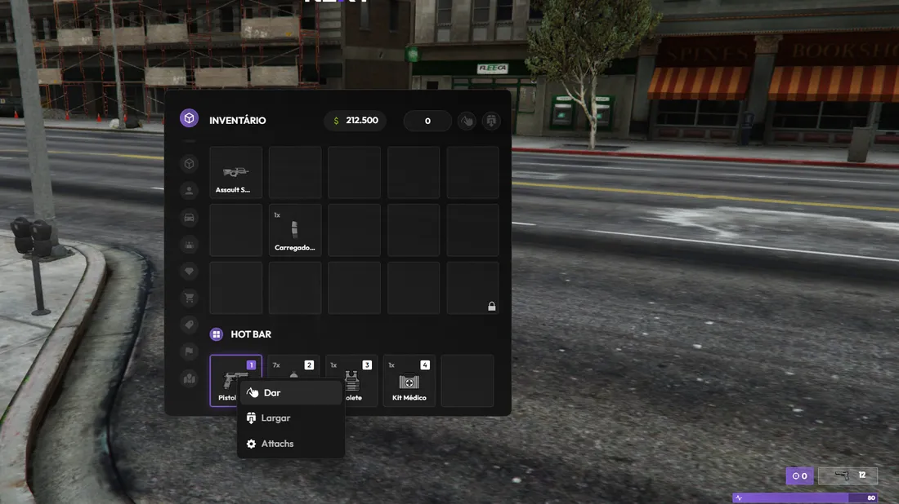


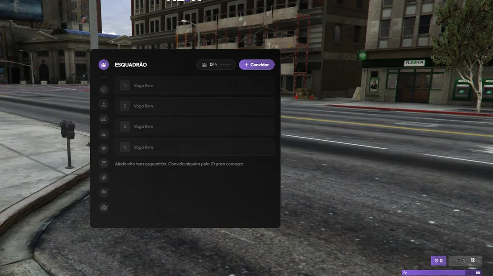
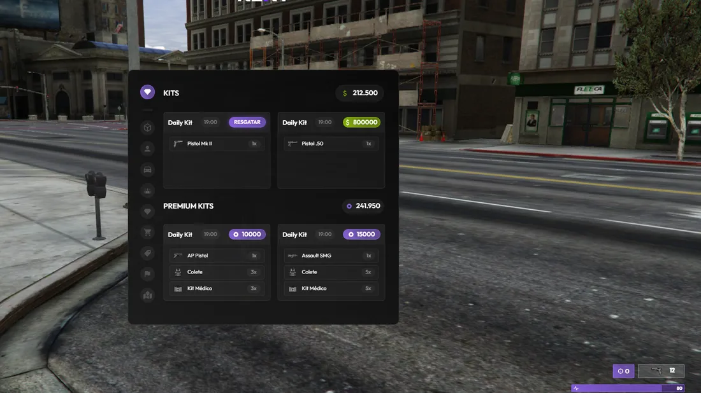


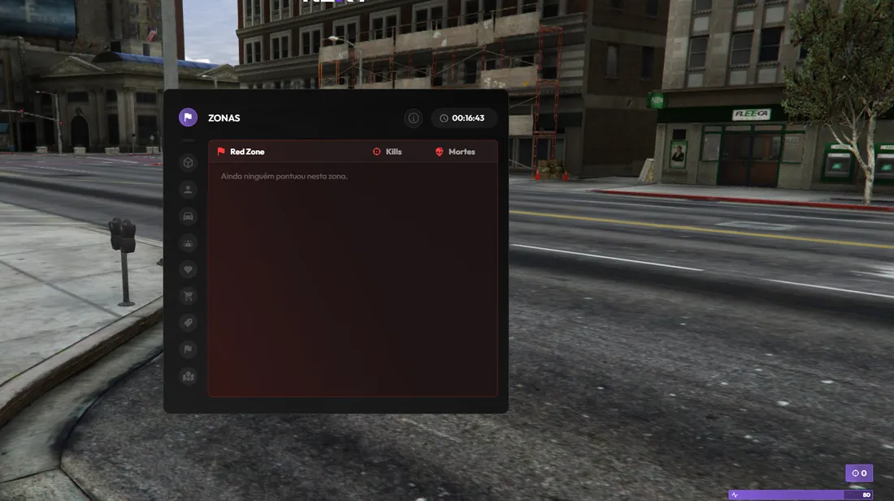
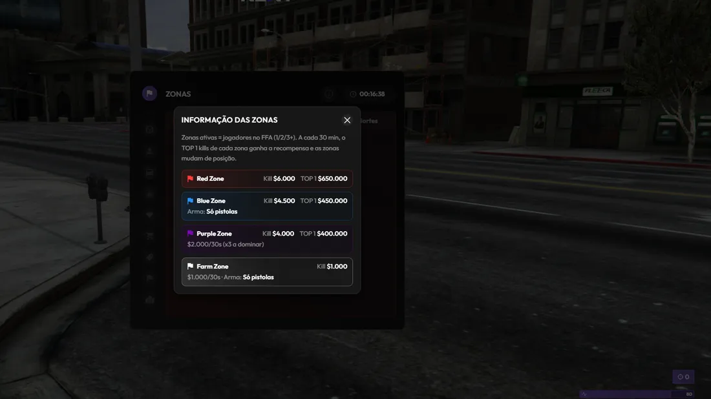

Sala de espera e menus16
O ponto de partida de cada sessão: modos de jogo, loja, personalização, passe de batalha, classificação e definições.

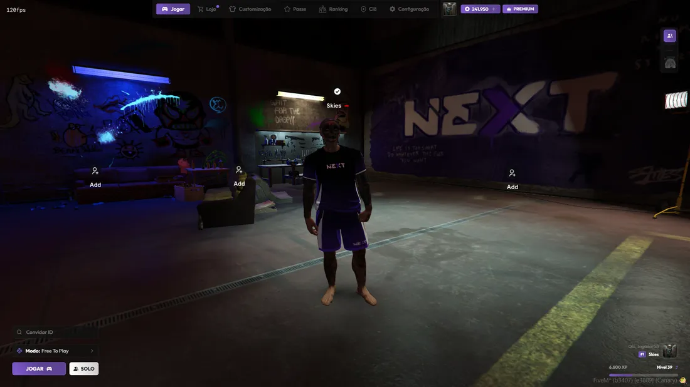


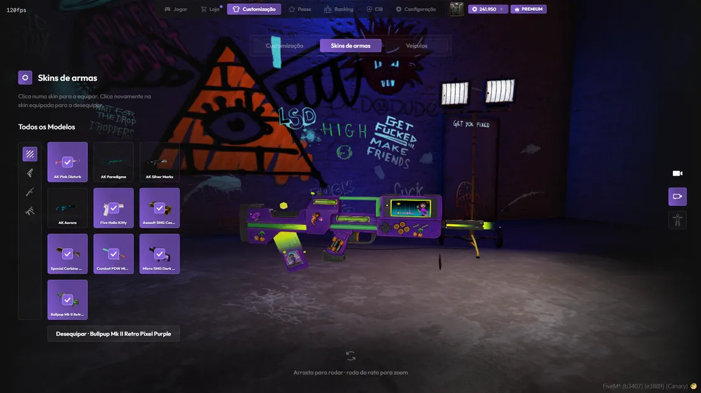


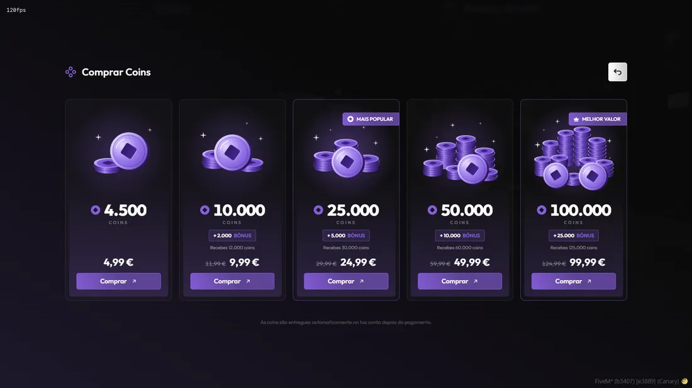


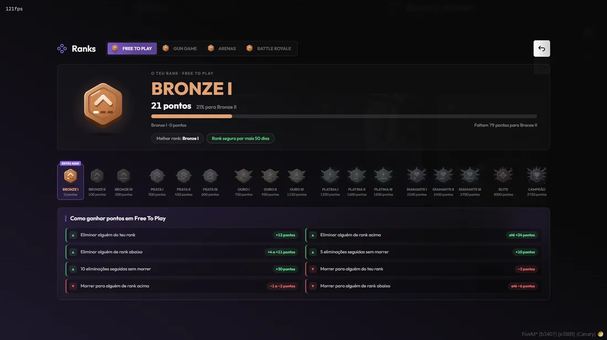
Fabrico e contratos04
Uma bancada para produzir armas e um sistema de contratos para as trocar por recompensas.


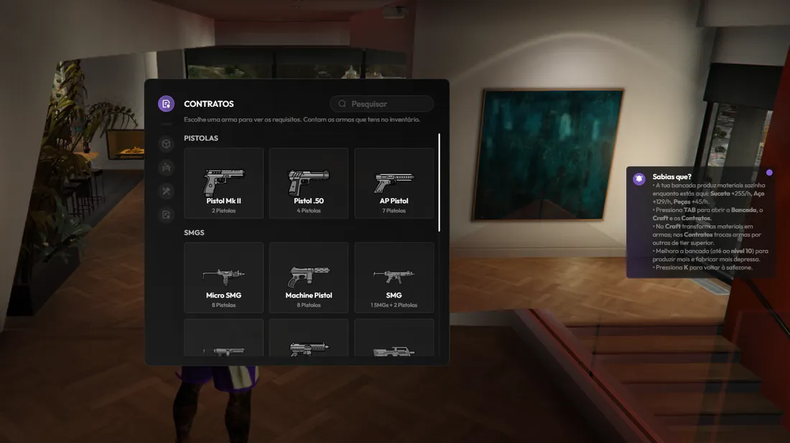
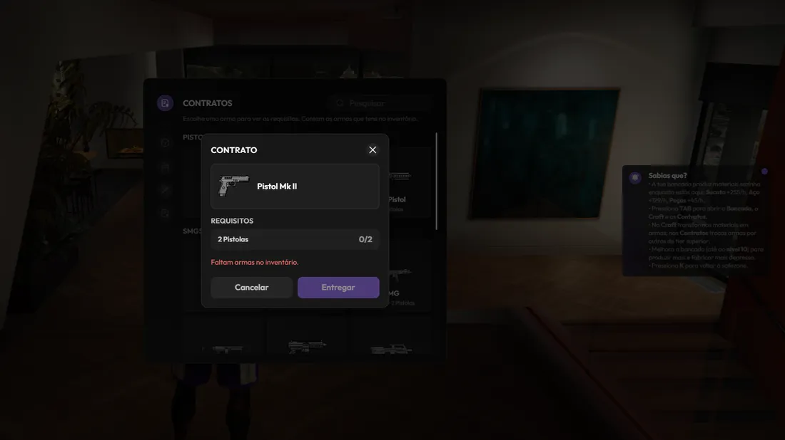
Painel de administração04
Ferramentas para a equipa gerir jogadores, economia e antibatota em tempo real.
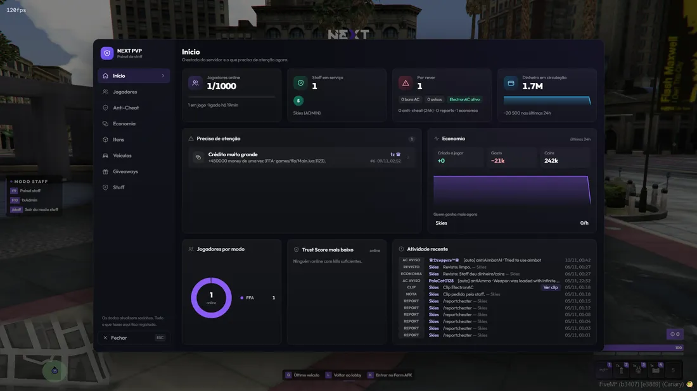
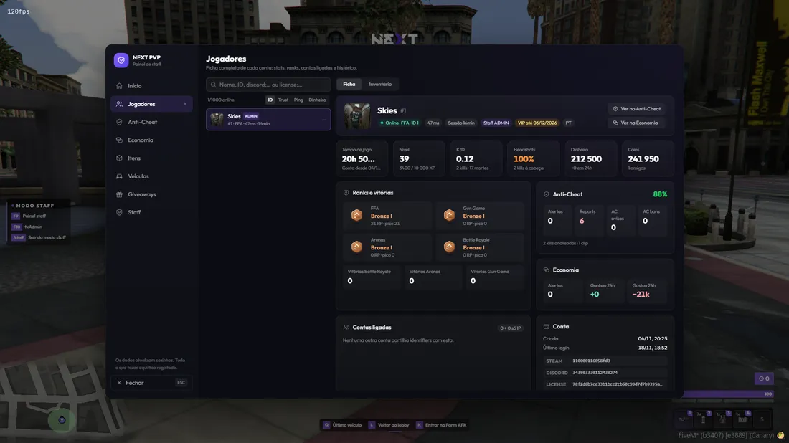

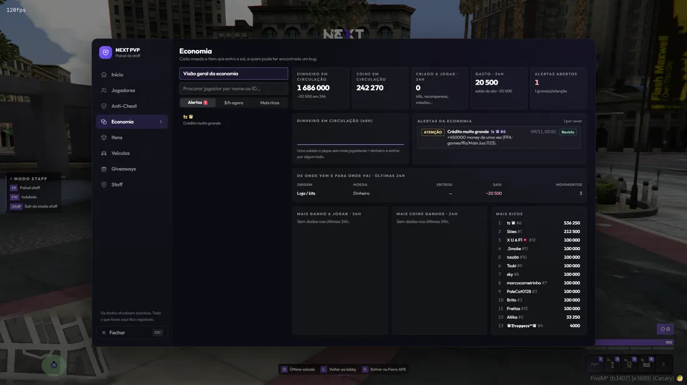
O desafio e a abordagem
Um dos principais desafios foi desenhar interfaces complexas capazes de apresentar muita informação sem sobrecarregar o jogador. Menus, elementos de informação no ecrã, painéis de interação e ecrãs de sistema tinham de ser claros, legíveis e compreendidos de imediato durante o jogo. Para isso, foi aplicada uma abordagem UI/UX centrada no utilizador. O processo focou-se na hierarquia, no espaçamento, na tipografia e no contraste de cor para guiar naturalmente a atenção do jogador. Cada interface foi pensada para ser escalável e consistente, permitindo ao sistema adaptar-se a novas funcionalidades sem perder uma linguagem visual unificada.
O resultado
O novo sistema aumentou a imersão dos jogadores ao tornar as interações mais rápidas, claras e intuitivas, reduzindo o atrito nos momentos críticos e permitindo-lhes concentrar-se totalmente no jogo. Dos elementos de informação no ecrã aos menus e painéis de interação, todas as interfaces funcionam agora em conjunto para apoiar o ritmo de jogo e o envolvimento da comunidade. Como resultado, o servidor ganhou uma presença visual mais profissional e de qualidade superior, reforçando a sua identidade e a perceção dos jogadores. Este projeto mostra como um design de interfaces bem estruturado pode ter impacto direto na experiência do utilizador, na usabilidade e na qualidade geral de uma plataforma de jogos.
Mais projetos
Dinis Cardoso®
Marca pessoal
2025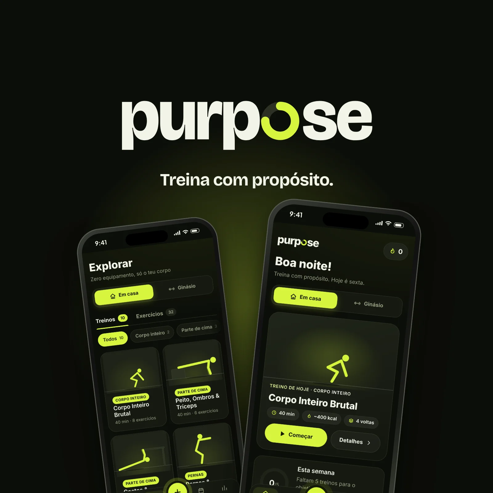
Purpose
Identidade visual e aplicação de treino em casa e no ginásio.
2026
NEXT
Criação de um branding completo.
2024
Porta 4a
Criação da identidade de marca e da comunicação visual.
2022
Palácio Nacional da Ajuda
Criação de um rebranding completo.
2025
VITAE
Reorganização e redesign da área de escritório.
2022
Site NEXT
Site e loja online do servidor NEXT PVP.
2025Fala comigo
Tens um projeto em mente? Vamos conversar — estou disponível para trabalhar em Lisboa e em qualquer parte do mundo.